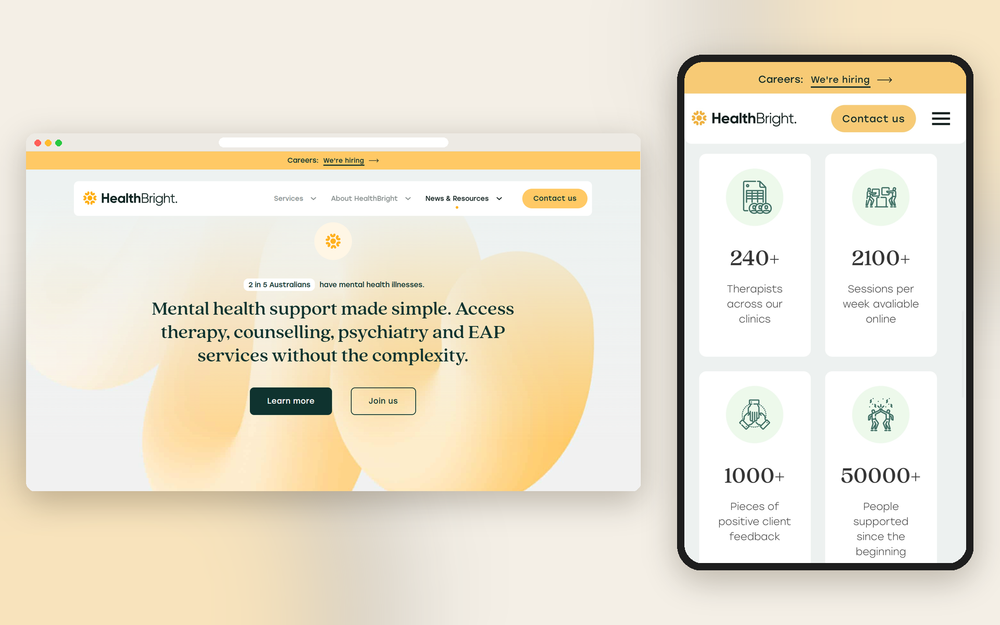
HealthBright is a mental health platform concept that helps people check in on their wellbeing, find support, and feel in control of their care.
Overview of the problem
People managing their mental health often juggle appointments, notes and coping tools across different apps. Many of these interfaces feel clinical, busy or demanding, right at the moment someone needs reassurance, which makes it harder to keep looking after themselves.
Context
HealthBright explores what a calmer, more supportive mental health platform could feel like. It brings the essentials into one place:
- quick daily mood and wellbeing check-ins
- finding, booking and preparing for sessions
- self-help resources for the moments in between
- a layout that works for people with diverse accessibility needs
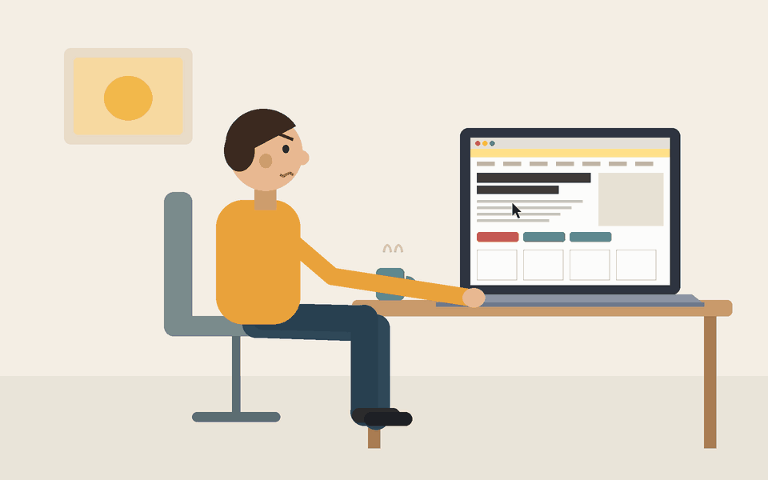
Goals
To design screens that feel gentle and encouraging while spreading awareness and information, so users are comfortable coming back and confident taking the next step in their care.
- Reduce overwhelm: Show one clear action at a time, with plenty of breathing room.
- Design for accessibility first: Readable type, strong contrast and simple interactions throughout.
- Encourage confidence: Use warm, supportive language that normalize mental health.
- Work everywhere: Keep the experience consistent across mobile and desktop.
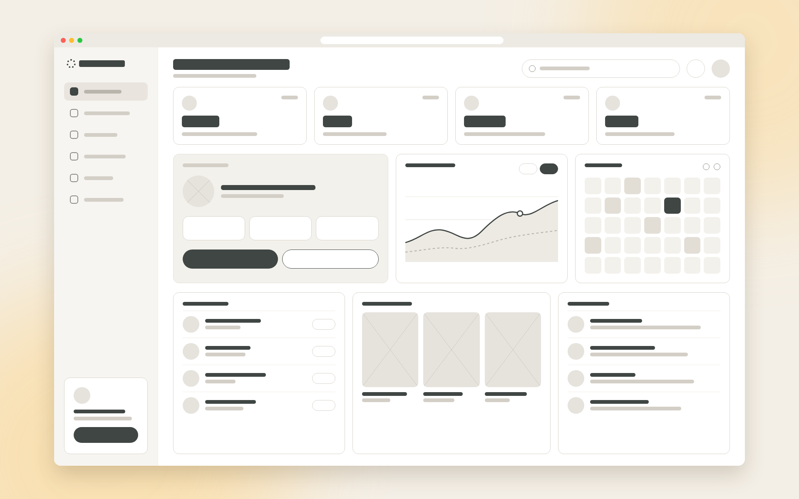
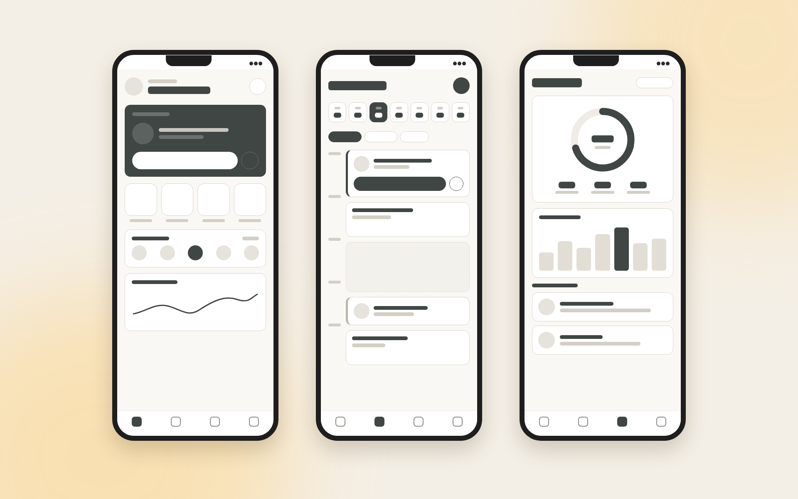
I designed HealthBright’s multi-page website to present complex healthcare information and research in a clear, structured, and accessible format. By establishing consistent layouts, intuitive navigation, and a strong visual hierarchy, the design helps users locate relevant information quickly and easily.
Process & key insights
I started by mapping how people currently look after their mental health online and reviewing existing platforms, then moved through wireframes and prototypes for mobile and desktop, testing each step for clarity, tone and accessibility against WCAG guidelines.
- Less is reassuring: Fewer choices per screen made the platform feel calmer and easier to start using.
- Tone matters as much as layout: Supportive, non-judgemental wording helped users feel safe sharing how they feel.
- Accessibility helps everyone: Larger tap targets and clear contrast made the whole experience easier, not just for some users.
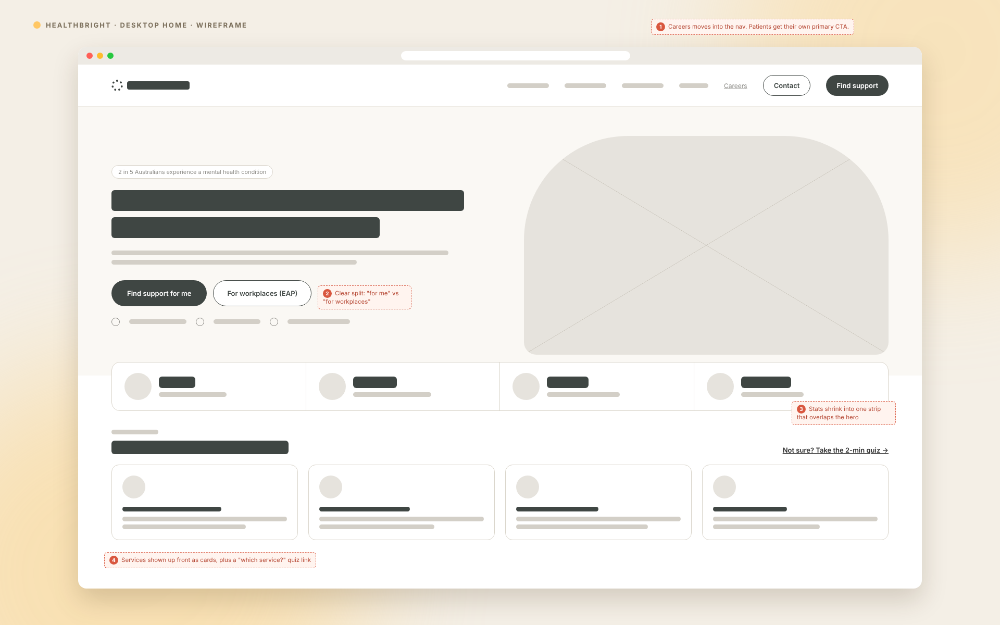
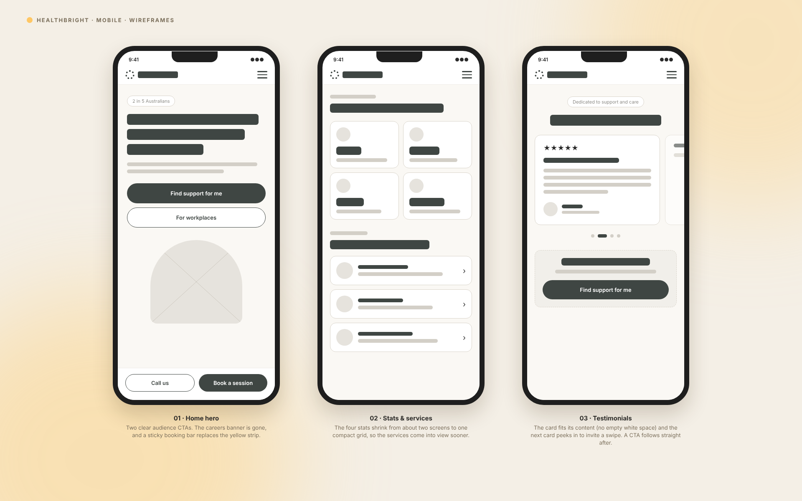
Results of what changed
As a product concept, HealthBright delivered:
- A complete flow from daily check-in to booking support
- Research and clear information that mental health is just as important as physical
- Responsive screens for mobile and desktop
- A calm, accessible visual system ready to build on
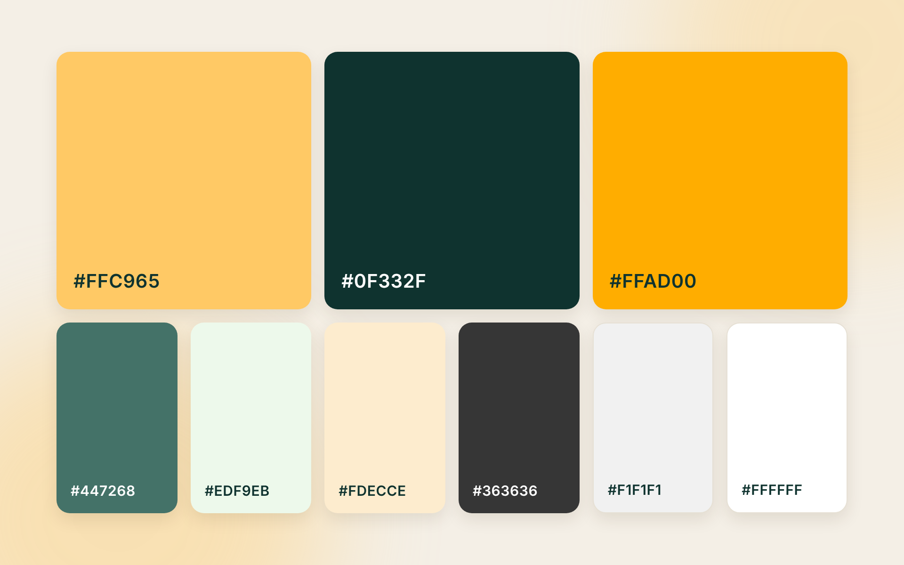
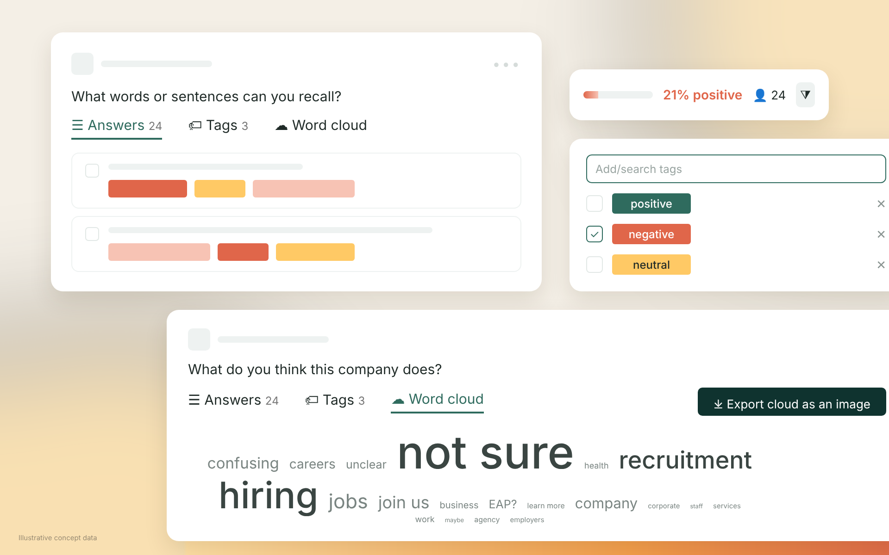
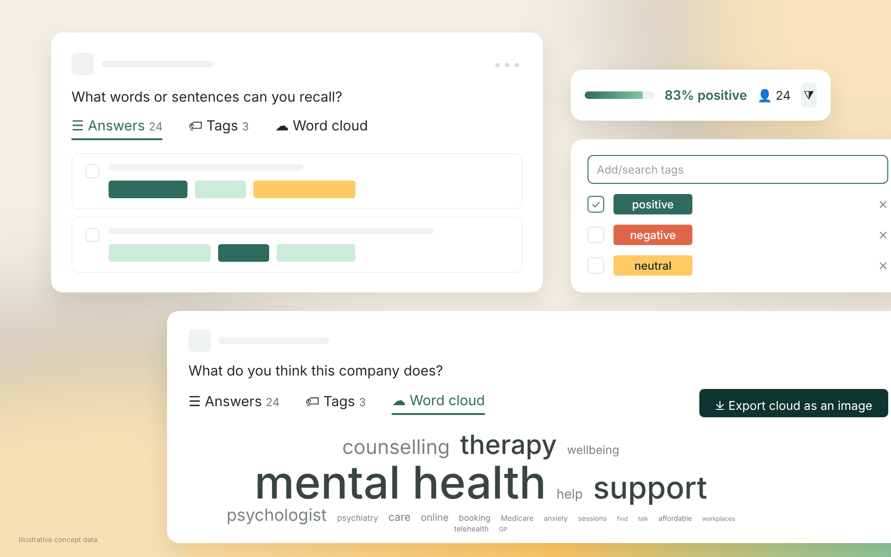
Add pictures/HealthBrightAfterSeconds.pngReflection of what I learned
Designing HealthBright’s multi-page research platform taught me how to structure content using consistent page templates, reusable components, and clear navigation hierarchies. I learnt how modular design improves consistency across pages, simplifies future content updates, and allows complex healthcare research to remain organised and accessible as the platform grows.
More work
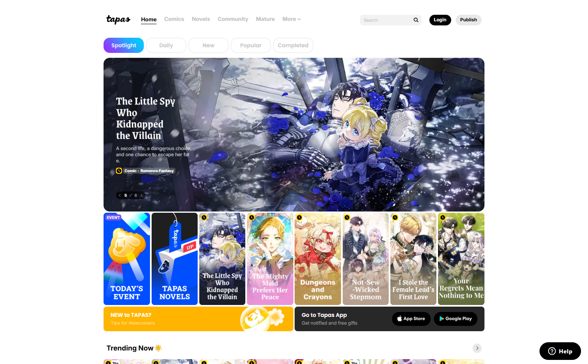
Tapas
Web designI redesigned layouts to be cleaner and energy efficient, helping older devices navigate content more easily.
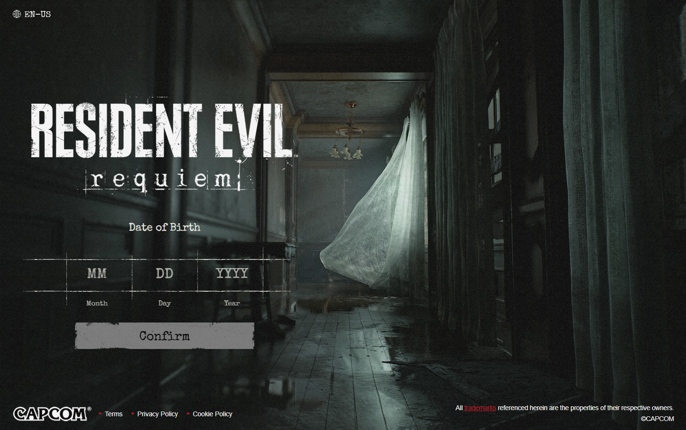
Resident Evil Requiem
Content moderationI co-designed an age-verification landing page that encourages and guides younger users through content restrictions.
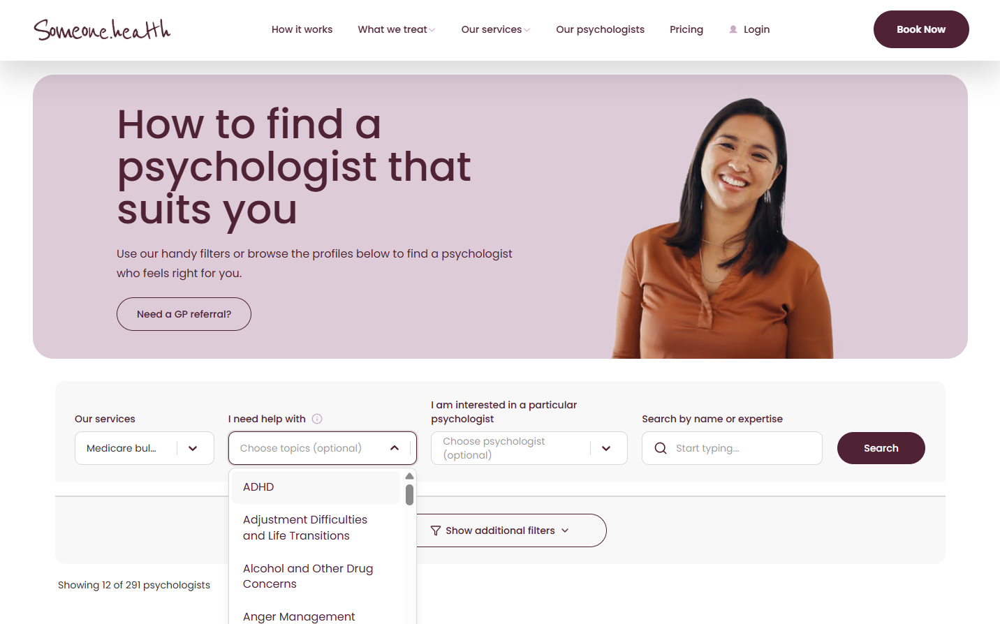
Someone.health
Web designI designed the visuals for a mental health clinic's platform so users can manage their well-being without being overwhelmed.